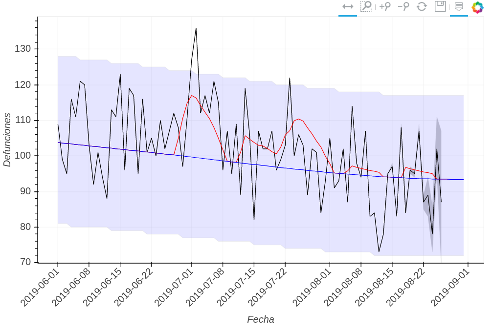
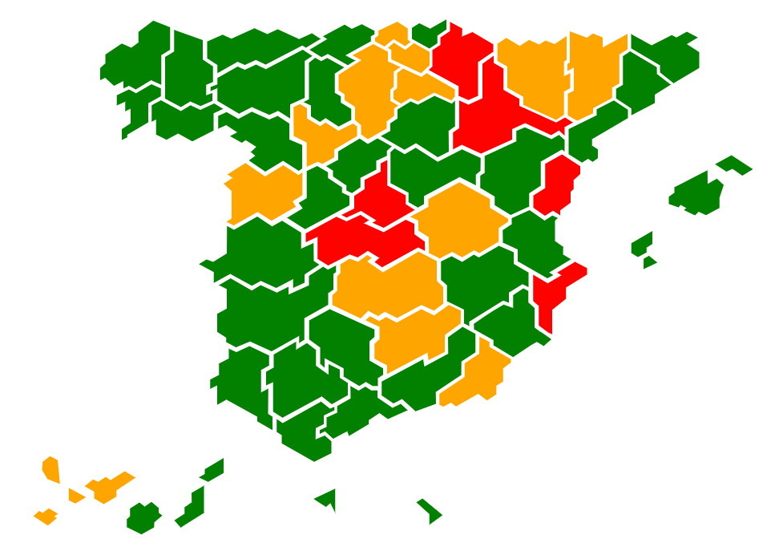

modelo <- bam(def ~ s(prov, bs = "re") +
prov * n +
s(day_year, bs = "cc", k = 5, by = prov) +
# s(dow, bs = "re") +
ato_1 + s(ato_1, prov, bs = "re", sp = 3) +
offset(log(pobl)),
family = poisson(), weights = peso, data = tmp)
the model is fit...
aggregations are used for estimations at larger administrative units
(excessive temperature effect)
decay <- 0.8
defs$ato_1 <- defs$ato_1 +
decay * defs$ato_2 + decay^2 * defs$ato_3 +
decay^3 * defs$ato_4 + decay^4 * defs$ato_5 +
decay^5 * defs$ato_6 + decay^6 * defs$ato_7
(huge issues with delays)

(more here)
probability of having a 10% increase in mortality attributable to heat
this probability is broken into 3 levels (green,...)

... although the conversation continues at...